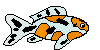
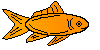

Choose your fish
 
Pick a type of fish and give it a name!
Click me once you've picked a fish!
- Hover over the fish you want then select
Choose fish
Virtual Goldfish Pet - HTML/CSS/Javascript - Patrick 2015